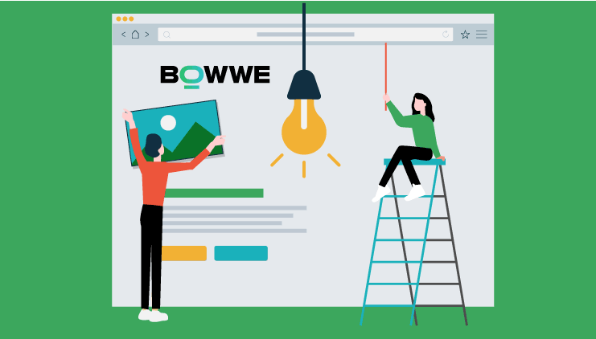
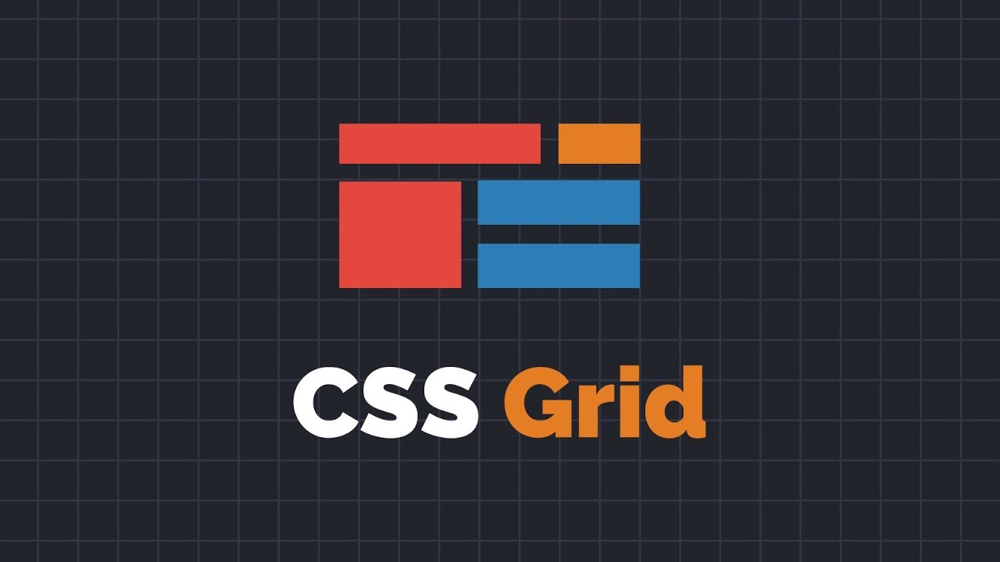

Propósito del sitio
Con este sitio se tiene el propósito de fomentar el aprenzaje de los temas Flex Box y CSS Grid.
Para el caso del Flex Box debe indicarse que es un módulo de diseño de CSS3, que básicamente altera el ancho, alto y posicionamiento de elementos de la mejor manera con el espacio del que disponemos.
Para el caso del CSS Grid se trata de una herramienta de diseño que consiste un modelo de maquetación, que controla las dimensiones, con una ubicación libre en base a una rejilla.

Breve Introducción
Con Flexbox y CSS Grid tenemos dos modelos de diseño CSS que permiten de manera muy sencilla diseñar páginas web que pueden ser muy básicas o tambien complejas.
¿Qué es Flex Box?

De acuerdo con Castro González J. este es un modelo de diseño CSS3, en este los elementos se adaptan a un contenedor para ser organizados de forma automática, esto de acuerdo con el tamaño de la pantalla o dispositivo en el que se ejecute. Allí existe un elemento padre que sostiene a los demás flex por medio de dos ejes “Flex Container”, los elementos hijos se conocen como “Flex Ítem” (Castro González, 2020)(p. 17).
El módulo CSS Grid

Villanueva I. indica que hablar de CSS Grid es hacerlo de un módulo de diseño, un sistema que divide la página en una cuadrícula o rejilla (grid) el cual usa tanto filas como columnas a la vez. En donde las líneas están numeradas, por tanto, en las rejillas hay elementos con espacios (gaps) entre ellos, además de esto debe indicarse que casi cualquier navegador puede interpretar este código (Villanueva, 2017).
Referencias Bibliográficas
Castro González, J. (10 de Septiembre de 2020). Aplicación Web para la evaluación y planificación de menús escolares. Obtenido de Universidad de La Laguna RIULL: https://riull.ull.es/xmlui/bitstream/handle/915/21328/Aplicacion%20Web%20para%20la%20evaluacion%20y%20planificacion%20de%20menus%20escolares.pdf?sequence=1
Echezuria, V. (24 de Enero de 2019). TUTORIAL PARA USAS FLEXBOX. Obtenido de programandoamedianoche: https://www.programandoamedianoche.com/2019/01/tutorial-para-utilizar-flexbox-en-css/
JAVA DESDE 0, ©. (4 de Noviembre de 2020). Introducción a CSS Grid Layout. Obtenido de https://javadesde0.com/: https://javadesde0.com/wp-content/uploads/maxresdefault-1-788x443.jpg
Villanueva, I. (18 de Octubre de 2017). CSS Grid: La BBC como ejemplo. Obtenido de octuweb: https://octuweb.com/css-grid-bbc/
Referencias De Imágenes
GridvsFlexbox
García de Zúñiga F. ¿Grid o Flexbox? ¿Qué resulta más útil en diseño y maquetación web?. 10 de Noviembre de 2017. Copyright © Arsys. Recuperado de https://www.arsys.es/blog/programacion/grid-flexbox-mejor-diseno-maquetacion-web/
logo 2
Los DesKra2. Copyright © 2015. Información de: CSS Avanzado. 14 de Marzo de 2018. Recuperado de http://losdeskra2.blogspot.com/2018/03/css-avanzado-grid-flexbox-edteam.html
construyendo
BOWWE. 2021. ¡16 propósitos importantes para los que definitivamente necesitará y utilizará su sitio web!. 2021. Recuperado de https://bowwe.com/es/blog/propositos-para-los-que-necesita-un-sitio-web
Foto
Vargas M. 2021. Archivos del autor.
Tetris
EPIK. 6 lecciones filosóficas que nos ha dejado el mítico Tetris. 6 de Junio de 2019. Recuperado de https://as.com/epik/2019/06/06/portada/1559833600_395890.html
CsGrid
Echezuria, V. (2 de Mayo de 2019). programandoamedianoche. Obtenido de GUÍA COMPLETA PARA APRENDER A UTILIZAR CSS GRID LAYOUT: https://www.programandoamedianoche.com/2019/05/guia-completa-para-aprender-a-utilizar-css-grid-layout/